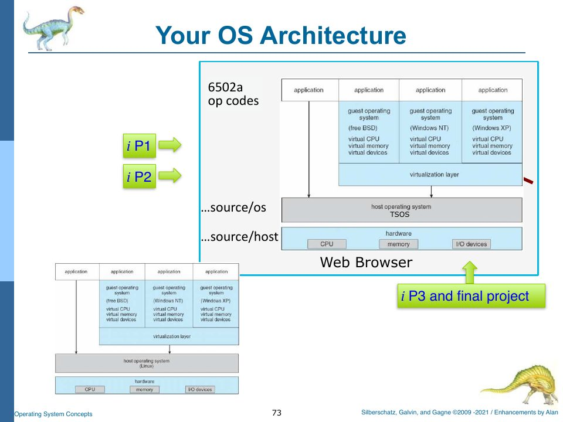

The Map: rObSen at a Glance
Before climbing the layers one at a time, it helps to see the whole building from across the street.
Two programs pretending to be one machine
rObSen is really two programs sharing one browser tab.
- The host (
source/host/) pretends to be hardware. It has a clock that ticks every 100 ms, a 768-byte memory, a memory accessor that sits between the CPU and memory, a 6502a-flavoured CPU, and a keyboard that raises interrupts. It is the only code allowed to touch the web page directly (the DOM), and it paints the panels you see beside the console. - The client OS (
source/os/) is the operating system proper. It has a kernel with an interrupt handler, device drivers for the keyboard and the disk, a console and a shell, process control blocks, a memory manager, a scheduler, and a swapper.
The browser is the bare metal underneath both. Alan’s comment at the top of control.ts puts it this way: the browser’s document environment is “the ‘bare metal’ (so to speak) for which we write code that hosts our client OS,” which makes the host “A LITTLE BIT like a hypervisor.” Chapter 2 picks this analogy apart.
Compare it with the slide Alan drew of the same thing:

The files, by layer
| Layer | File | Lines | What it is |
|---|---|---|---|
| Globals | globals.ts | 88 | Constants (clock interval, IRQ numbers, mode bits) and every _Global variable both halves share |
| Host | host/control.ts | 426 | Button handlers, host log, the live panels (CPU, PCB table, memory dump, disk) |
| Host | host/devices.ts | 65 | The clock pulse and the keyboard interrupt source |
| Host | host/memory.ts | 46 | 768 bytes of RAM in a Uint8Array, with MAR and MDR |
| Host | host/memoryAccessor.ts | 73 | Logical-to-physical translation and bounds checks |
| Host | host/cpu.ts | 296 | The 6502a CPU: 14 opcodes, one instruction per cycle |
| Kernel | os/kernel.ts | 646 | Bootstrap, shutdown, interrupt handler, timer ISR, dispatcher, kill, swap decisions |
| Kernel | os/interrupt.ts | 10 | An interrupt is an IRQ number plus parameters |
| Kernel | os/queue.ts | 53 | A FIFO queue on top of an array |
| Drivers | os/deviceDriver.ts | 22 | Base class for drivers |
| Drivers | os/deviceDriverKeyboard.ts | 94 | Key codes → characters on the kernel input queue |
| Drivers | os/deviceDriverDisk.ts | 670 | The disk: geometry, blocks, directory, files, chkdsk, swap images |
| Console | os/console.ts | 313 | Text output on the canvas, scrolling, backspace, history recall |
| Console | os/canvastext.ts | 205 | Jim Studt’s 2007 vector font, drawn stroke by stroke |
| Shell | os/shell.ts | 1223 | Every command, from ver to setschedule |
| Shell | os/shellCommand.ts, os/userCommand.ts | 16 | Two little record classes |
| Processes | os/pcb.ts | 122 | The process control block |
| Memory | os/memoryManager.ts | 162 | Partition table: allocate, load, release |
| Swapping | os/swapper.ts | 38 | Roll-out and roll-in |
| Utilities | utils.ts | 47 | trim and rot13 |
Three journeys through the system
Most of the book is about these three paths. Keep them in mind; every chapter adds detail to one of them.
A keystroke. You press v. The browser fires a keydown event. Devices.hostOnKeypress (host) wraps the key code in an Interrupt(KEYBOARD_IRQ, …) and puts it on the kernel interrupt queue. On the next clock pulse, Kernel.krnOnCPUClockPulse sees a pending interrupt and calls krnInterruptHandler, which switches to kernel mode and calls the keyboard driver’s ISR. The driver turns key code 86 into the character "v" and puts it on the kernel input queue. Console.handleInput drains that queue, draws the v on the canvas, and appends it to its line buffer. When you press Enter, the console hands the buffer to Shell.handleInput. (Chapters 3, 6, 7, 8.)
A program. You paste hex into the User Program Input box and type load. The shell validates the hex, asks the memory manager for a free 256-byte partition, copies the bytes in, builds a PCB, and puts it on the ready queue. run 0 (or runall) asks the kernel to dispatch it: the PCB’s saved registers are copied into the CPU and isExecuting flips to true. From then on, each clock pulse with no pending interrupt runs exactly one instruction. When the instruction is 00 (BRK), the kernel retires the process and frees its partition. (Chapters 4, 5, 9, 11.)
A context switch. With several programs loaded and runall running, the CPU counts down a quantum (6 cycles by default). At zero it enqueues a TIMER_IRQ. The timer ISR puts the current PCB at the back of the ready queue, picks the next one, swaps it in from “disk” if it isn’t in memory, and dispatches it. (Chapters 12, 13, 17.)
Building and running rObSen
rObSen has no bundler. The TypeScript compiler turns each .ts file in source/ into a .js file in distrib/, and index.html loads those files with plain <script> tags. The configuration is all in tsconfig.json:
{
"compilerOptions": {
"target" : "ES2023",
"rootDir" : "source",
"outDir" : "distrib",
"sourceMap" : true,
"extendedDiagnostics" : true
},
"include": [
"source/**/*"
],
}
So the whole build is:
$ cd OS-Fall2025
$ tsc # reads tsconfig.json, writes distrib/**/*.js and .js.map
Then open index.html in a browser and click Start.
tsc 5.9 compiles it with zero errors. TypeScript 6 and the native TypeScript 7 compiler change two defaults (strict mode on; the old module keyword for namespaces is an error), so with a current compiler the same command reports 147 errors. It still writes the JavaScript, and the OS still runs, but the noise hides real problems. Either install TypeScript 5 for this project (npm install --save-dev typescript@5 and run npx tsc), or make the two small changes in Appendix C.
Two things about this setup matter later. First, the order of the <script> tags in index.html is load-bearing: globals.js must come first, and kernel.js is deliberately last among the OS files. Second, because nothing is imported or exported between files in the module sense, every file shares one global scope. The first deep dive explains why that works, and what it costs.
<!-- Globals CONSTANTS and _Variables. Must be included first. -->
<script type="text/javascript" src="distrib/globals.js"></script>
<!-- Host (Virtual Machine / Hardware Simulation) Routines -->
<script type="text/javascript" src="distrib/host/control.js"></script>
<script type="text/javascript" src="distrib/host/devices.js"></script>
<script type="text/javascript" src="distrib/host/memory.js"></script>
<script
type="text/javascript"
src="distrib/host/memoryAccessor.js"
></script>
<script type="text/javascript" src="distrib/host/cpu.js"></script>
<!-- Virtual OS Routines: Make sure Kernel code is last, since it needs those above it. -->
<script type="text/javascript" src="distrib/os/interrupt.js"></script>
<script type="text/javascript" src="distrib/os/canvastext.js"></script>
<script type="text/javascript" src="distrib/os/console.js"></script>
<script
type="text/javascript"
src="distrib/os/memoryManager.js"
></script>
<script
type="text/javascript"
src="distrib/os/deviceDriver.js"
></script>
<script
type="text/javascript"
src="distrib/os/deviceDriverDisk.js"
></script>
<script
type="text/javascript"
src="distrib/os/deviceDriverKeyboard.js"
></script>
<script type="text/javascript" src="distrib/os/swapper.js"></script>
<script type="text/javascript" src="distrib/os/pcb.js"></script>
<script type="text/javascript" src="distrib/os/queue.js"></script>
<script type="text/javascript" src="distrib/os/shell.js"></script>
<script
type="text/javascript"
src="distrib/os/shellCommand.js"
></script>
<script type="text/javascript" src="distrib/os/userCommand.js"></script>
<script type="text/javascript" src="distrib/os/kernel.js"></script>
<!-- Other Routines -->
<script type="text/javascript" src="distrib/utils.js"></script>
<!-- Uncomment the line below to enable GLaDOS testing. -->
<script src="test/glados-ip4x.js"></script>
Note the last <script> line: glados-ip4x.js is enabled, so every time you load the page, GLaDOS (Alan’s automated tester) starts typing commands at your OS. Appendix D explains what she does.
How the project grew
The semester project has four parts, all due at the end, but meant to be built in order. Here is how rObSen’s commit history lines up with them:
| Part | Requirement (paraphrased from the project spec) | Where in rObSen | Commits |
|---|---|---|---|
| One | Shell and console: ver, date, whereami, a creative command, taskbar with status, scrolling, punctuation, backspace, tab completion, history, BSOD on trap, load validates hex | shell.ts, console.ts, deviceDriverKeyboard.ts, index.html | Sept 6 – Sept 30, 2025 |
| Two | Load one program into memory at $0000, PCB, run <pid>, CPU synced to the clock, live CPU/PCB/memory display, single-step, Ctrl-C | cpu.ts, memory.ts, memoryAccessor.ts, pcb.ts, memoryManager.ts | Sept 15 – Oct 4 |
| Three | Three programs at once in separate partitions, clearmem, runall, ps, kill, killall, q, round-robin scheduler, base/limit protection, turnaround and wait times | kernel.ts (dispatcher, timer ISR), memoryManager.ts, control.ts panels | Oct – Nov 9 |
| Four | Disk device driver with format, create, read, write, delete, copy, rename, ls, link, alias, hidden files, chkdsk; FCFS and priority scheduling; swapping to run four or more processes | deviceDriverDisk.ts, swapper.ts, kernel.ts | Nov 16 – Dec 11 |
The scheduling simulator in sim/ (sched_start.cpp, a C++ permutation evaluator) was a separate assignment from mid-October; Chapter 12 uses it.